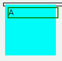

フロート化した要素の子孫要素をポジショニングすると指定した位置に配置されない。表示すらされないこともある。
<div style="float:left; width:100px; height:100px; background:aqua;"> <div style="position:relative; left:5px; top:5px; border:2px solid green;">A</div> </div>
フロート内にあるdiv要素を右下方向に5px移動させています。
WinIE6.0での表示（標準モード）